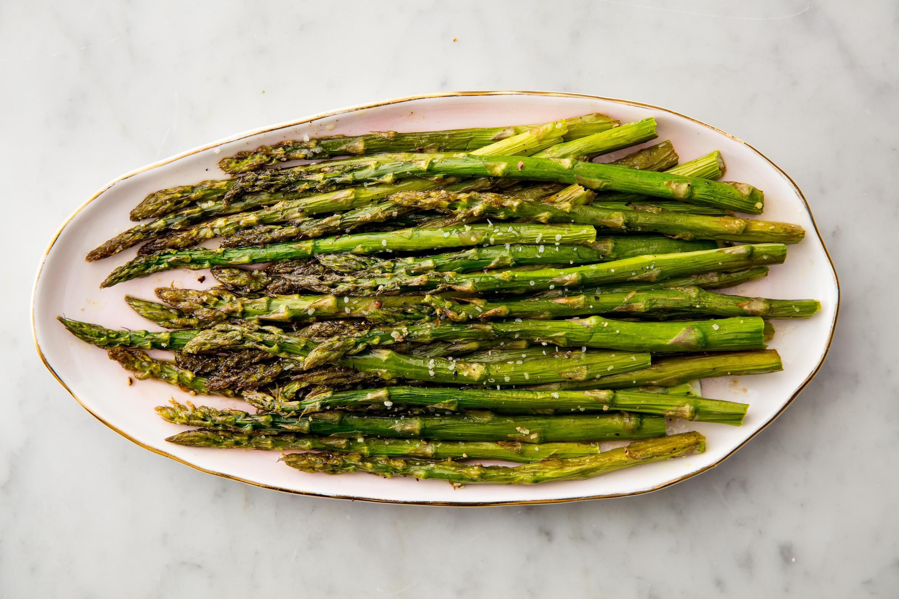

Oven-Roasted Asparagus

Description placeholder
Delicous,flavorfull, and simple roasted asparagus
Ingredients
- 1 bunch asparagus, stalks trimmed
- 3 tablespoons olive oil
- Salt
- Ground black pepper
Instructions
- Preheat oven to 200ºc
- In a mixing bowl toss asparagus with olive oil,sprinkle with salt and pepper, and parmasan cheese and garlic if using.
- Arrange asparagus flat on a baking tray, bake until tender 15-20 minutes. Cooking time will vary depending on the thickness,use this as a guide and adjust if needed.